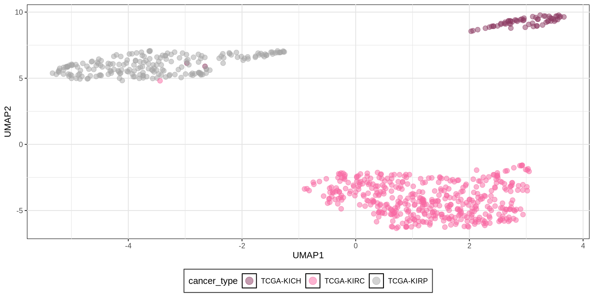
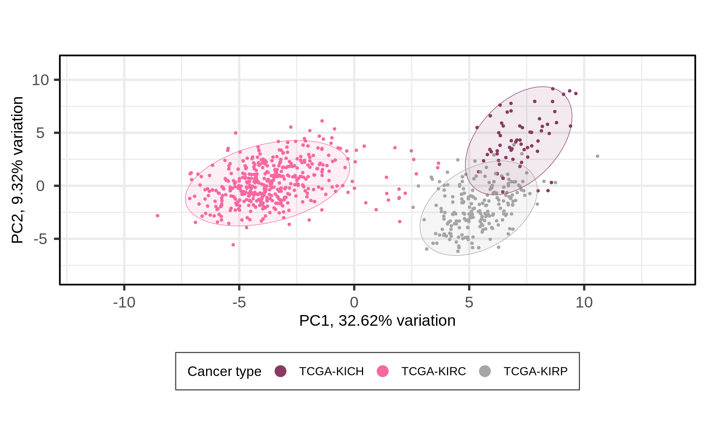
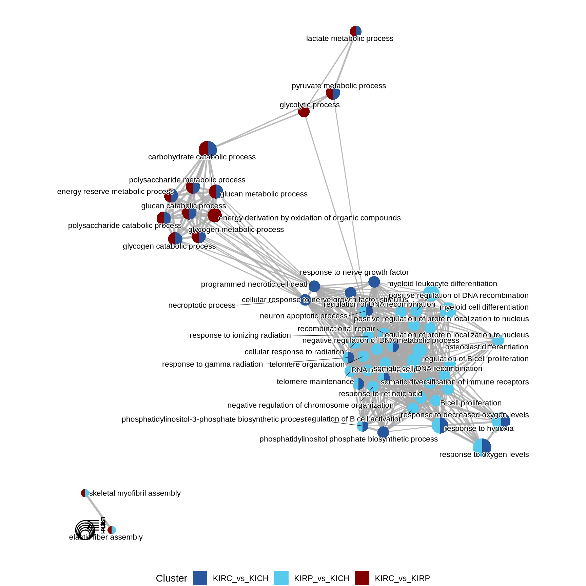
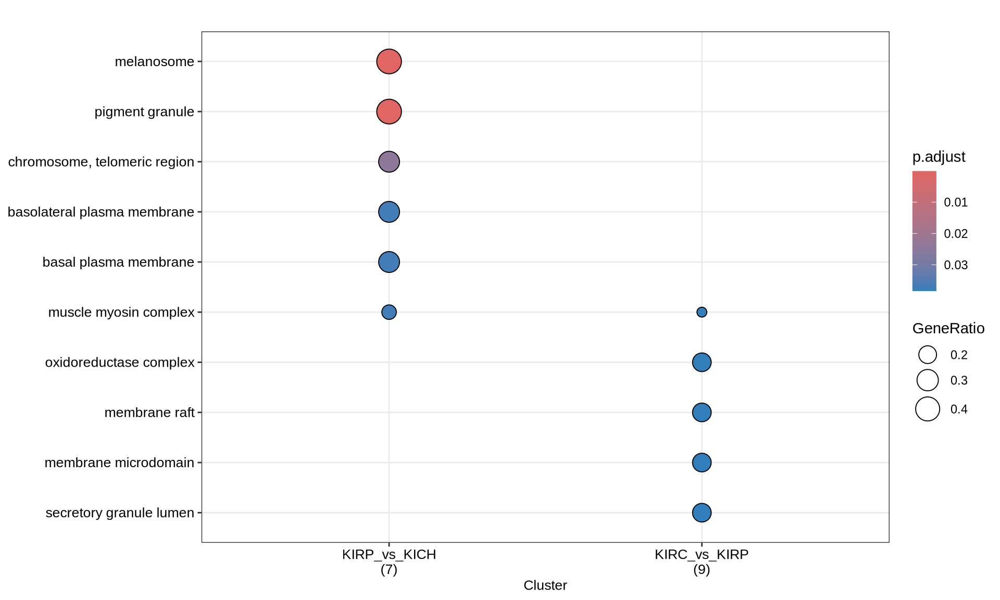
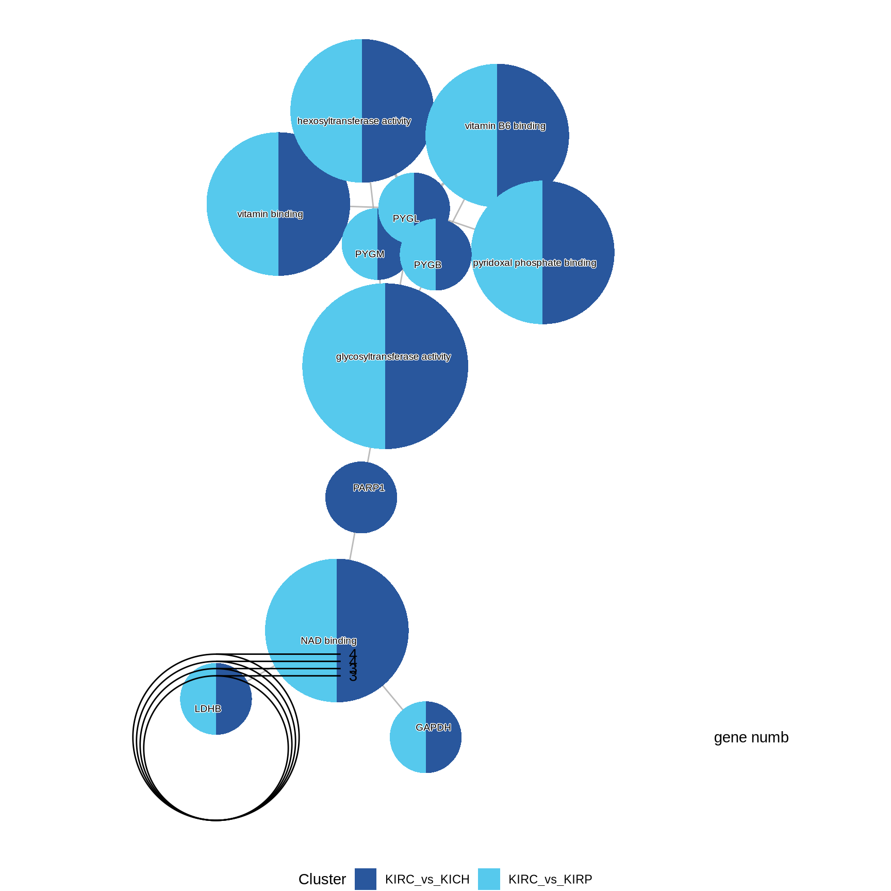
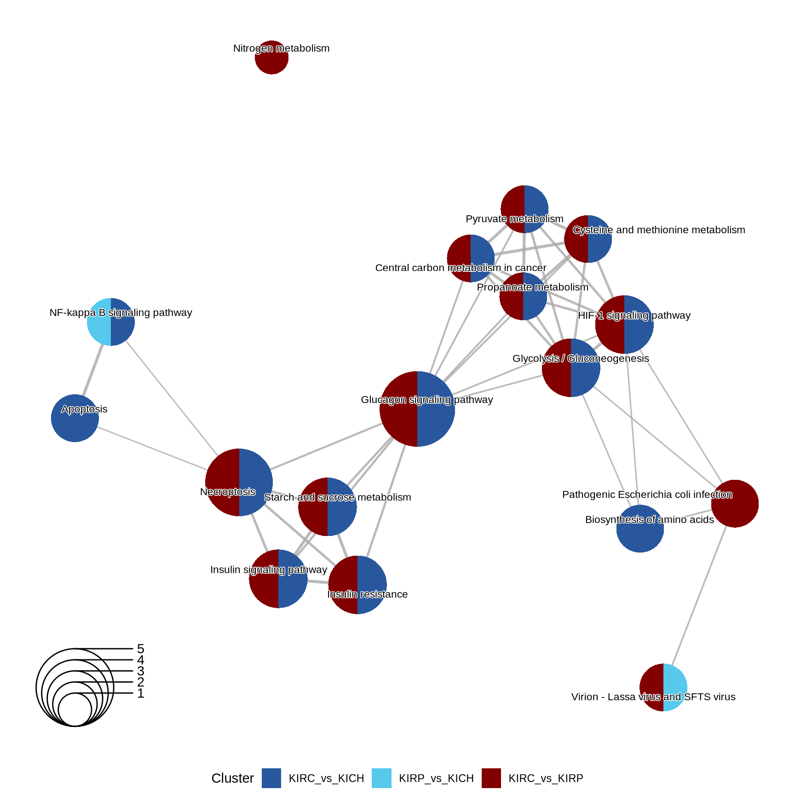
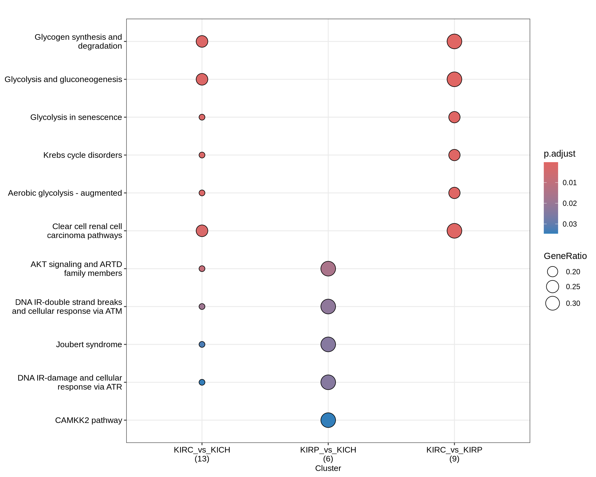
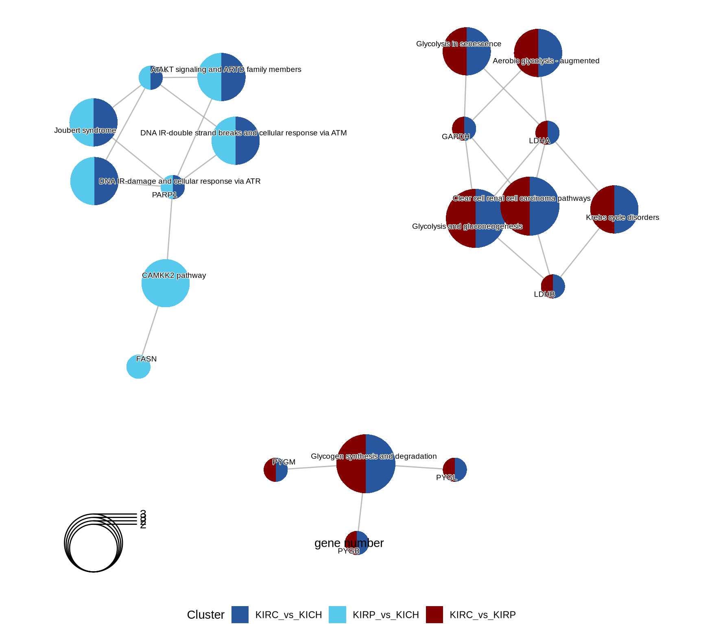

3 Proteomics Analysis
3.1 On this page
Biological insights and take-home messages are at the bottom of the page at Lesson Learnt: Section 3.5.
- Here we investigate the proteomics data across the three Kidney Cancers.
- First, we perform a QC on protein spectra abundance, their distribution across samples and we impute eventual missing values.
- Then, we do some exploratory analyses on samples, protein bundances and clinical covariates.
- We then run a formal Differential Protein Abundance analysis to identify proteins that have different expression levels across the three Kidney cancer types.
- We perform Gene Set Enrichment Analyses on the differentially abundant proteins to investigate biological and molecular themes that discriminates between the three Kidney cancer types.
3.2 Proteomics data overview and QC
3.2.1 Spectral counts overview
For TCGA Kidney cancer proteomics data, we will perform analyses similar to the ones performed for the transcriptomics one (see Chapter 2). We first start with an overview of the datasets and QC.
Let’s check the spectral counts distributions across samples, and the protein completeness across samples.
Looking at the distributions, we can conclude that the spectral intensities were already normalized and scaled, since the spectral values are centered around 0 and have a normal distribution.
We have 258 proteins in total, across 709 samples (79.9% of samples had proteomics data).
- 24 proteins were missing in all samples (100% of patients with proteomics data available)
- 1 protein was missing in 440 samples (62.1% of patients with proteomics data available)
- 16 proteins were missing in 269 samples (37.9% of patients with proteomics data available)
- 6 protein were missing in only 1 sample 211 proteins were detected for all patients with proteomics data available)
We can obviously drop the 24 proteins for which we have not spectral counts for none of the samples. For the remaining proteins for which we do not have full occupancy, we will apply a standard imputation strategy.
3.2.2 Data imputation
Missing values imputation for label-free proteomics is a large and complex field of study.
In our Kidney cancer proteomics samples the number of proteins detected is small and the distribution of missing values is oddly discrete. This suggests that some kind of filtering was already applied during the preprocessing steps, together with scaling and normalization of the proteins spectral counts. The absence can therefore as well be ascribed to biological reasons as well, and not only to technical problems with its detection.
To preserve this putative biological signal, I replace in each sample the missing values with the minimum spectral count available in that sample.
Let’s check how the spectral distributions changed.

3.3 Dimesionality Reduction and Dataset Exploration
3.3.1 UMAP on proteomics data
Let’s check the samples clustering on a UMAP. We have almost a perfect clustering of the samples in their corresponding cancer subtypes, with just 2 KICH samples clusting with KIRC samples.

3.3.2 Principal Component Analysis (PCA)
As we did for the transcriptomics data (see Chapter 2), the next step in the dataset exploration is to perform the Principal Component Analysis.

The first 21 Principal Components capture more than 80% of the variance in the Kidney cancers transcriptomics dataset, with the first two components (PC1 and PC2) capturing a bit more than 40% of the variance.
When we project the samples in the PC1 and PC2, we can see that the PC1 separates KIRC from KICH and KIRP, which instead cluster together. The second component PC2, instead, seems to separate KICH and KIRP samples. The separation between KICH and KIRP samples along component PC2 is clearer in the proteomics data than in the transcriptomics data.


Let’s check the loadings (i.e.: 21 Principal Components capture more than 80% of the variance in the) for the top 4 Principal Components. These indicate which genes are the more responsible to explain the position of the samples along the components, and the direction of this separation.
Looking at the top 1% most variable proteins (~ 24 proteins), the following 7 proteins are the top loadings for the first 4 Principal Components:
- ATM
- CLAUDIN7
- EPPK1
- GAPDH
- HSP70
- MYH11
- NDRG1_pT346
Let’s now check the expression of the five top genes identified with the PCA across the cancer types:

CLAUDIN-7 is a known diagnostic immunohistochemical marker for classifing chromophobe renal carcinoma (KICH), and indeed seems overexpressed in KICH when compared to KIRC and KIRP.
Let’s check the Pearson correlation with other clinical covariates.
Histological grade, subtype mRNA and subtype miRNA strongly correlates with PC1. Cancer type, instead, correlates more with PC2. Interestingly, tumor stage, follow up tumor status and vital status correlates with PC5 (~4% of observed variance), which does not correlates with cancer type but does correlate with subtype protein. This suggest that there is a good correlation between the differences in protein abundances across the kidney carcinomas that correlate with a poorer prognosis, and this signal does not correlate with the kidney carcinoma type (cancer type), nor with the gene expression (subtype mRNA and subtype miRNA).

3.4 Differential protein abundance analysis
In addition to cancer type, we saw that age, ethnicity (and race) and age had somewhat a correlation with the cancer types.
We may want to include this covariates in the differential gene expression analysis in order to include their contribution into the model.
3.4.1 Identification of differentially abundant proteins
For proteomics analyses, we use two arbitrary thresholds to retain genes that are significantly differentially expressed across the each comparison: an absolute logFold-Change (logFC) higher than 1, and an adjusted p-value lower than 0.05. This results in:
- KIRC_vs_KICH, 197 differentially abundant proteins, 105 upregulated and 92 downregulated
- KIRP_vs_KICH, 186 differentially abundant proteins, 97 upregulated and 89 downregulated
- KIRC_vs_KIRP, 207 differentially abundant proteins, 102 upregulated and 105 downregulated
As usual, we can visualize the logFC p-values relationships for all the proteins with a volcano plot.

We can also check the logFC and adjusted p-value for the top 7 proteins that are the top loadings for the first 4 Principal Components and see how these proteins were differentially abundant across the comparisons. We can confirm what we have naively observed at the level of protein abundance in Figure 7 while investigating the PCA loadings: CLAUDIN7 and NDRG1_pT346 are the top loadings for PC1, which separates KIRC from KICH and KIRP, and indeed, these proteins are the most differentially abundant in the comparisons of KIRC versus KIRP or KICH.
The UpSet plot shows that KIRC has a strong signature of 19 proteins that are differentially abundant when compared to KIRP or KICH. Moreover, KICH overexpresses c-KIT, ERα_pS118 and CDH1 and downregulates ATM, NDRG1_pT346 and PARP1 when compared to KIRC or KIRP.
Tables of differentially expressed proteins.
3.4.2 Comparative enrichment analyses across cancer types
In the next steps we further characterize the differentially abundant proteins across the three kidney cancers by performing a Gene Set Enrichment Analysis (GSEA).
3.4.2.1 GO Biological Process terms
Gene Ontology Biological Process are the larger processes or ‘biological programs’ accomplished by the concerted action of multiple molecular activities. Examples of broad BP terms are “DNA repair” or “signal transduction”. Examples of more specific terms are “cytosine biosynthetic process” or “D-glucose transmembrane transport”.



The enriched GO BP terms in KIRC vs. KIRP and KIRC vs. KICH suggest that KIRC has a strong enrichment in its catabolic metabolism, with enriched terms such as “carbohydrate catabolic process”, “glycogen catabolic process” and “glycogen metabolic process”. Enrichment of these terms are driven by the overabundance of Glycogen Phosphorylase B, L and M (PYGB, PYGL, PYGM), Lactate Dehydrogenase A (LDHA) and Glyceraldehyde-3-Phosphate Dehydrogenase (GAPDH) in KIRC when compared to KIRP and KICH.
KICH seems instead to retain more its differentiation as highlighted by the lower abundance of Poly(ADP-Ribose) Polymerase 1 (PARP1) when compared to KIRC and KIRP, resulting in the enrichment of GO BP terms related to “Negative regulation of telomere maintainance”.
The complete list of 227 GO BP terms enriched across the three contrasts is reported below.
3.4.2.2 GO Cellular Compartments terms
Gene Ontology Cellular Compartment serves to capture the cellular location where a molecular function takes place.


GO CC enrichment analyses do not provides any further insights on the characterization of kidney carcinomas based on their proteomics profiles.
The complete list of 23 GO CC terms enriched across the three contrasts is reported below.
3.4.2.3 GO Molecular Function terms
Gene Ontology Molecular Function serves to represent molecular-level activities performed by gene products.



Enrichment of GO MF terms confirm the catabolic signature of KIRC when compared to KIRP and KICH, with enriched terms such as “glycosiltransferase activity” and “pyridoxal phosphate binding” driven by the over abundance of PYGB, PYGL and PYGM.
The complete list of 35 GO MF terms enriched across the three contrasts is reported below.
3.4.2.4 KEGG pathways
KEGG pathways are manually curated and capture our knowledge of the molecular interaction, reaction and relation networks.


Also the enriched KEGG pathways revolved around the metabolic disregulation of KIRC (e.g.: “Glycolysis / Gluconeogenesis” and “Starch and sucrose metabolism”) when compared to KIRP and KICH, linked as well to “Necroptosis” and “HIF-1 signaling pathway”.
The complete list of 30 KEGG pathways across the three contrasts is reported below.
3.4.2.5 Reactome pathways
Similarly to KEGG, Reactome pathways are manually curated biological pathways.
Again, enriched Reactome pathways characterized KIRC “Glycogen metabolism”, “Metabolosim of charbohydrates” and “Pyruvate metabolism” when compared to KIRP and KICH kidney carcinomas.
The complete list of 10 Reactome pathways enriched across the three contrasts is reported below.
3.4.2.6 WikiPathways
Lastly, also WikiPathways provides another angle on a set of manually curated biological pathways.


The enriched WikiPathways confirmed the “Aerobiuc glycolysis - augmented” in KIRC, when compared to KIRP and KIRCH, as well as a proper “Clear cell renal cell carcinoma pathwyas”, driven by the abundance of GAPDH, LDHA and LDHB.
KICH retention of differentiation was supported by the abundance of the ATM Serine/Threonine Kinase ATM and PARP1, which resulted in the enrichment of terms such as “DNA IR-double strand breaks and cellular response via ATM”.
The complete list of 53 WikiPathways pathways enriched across the three contrasts is reported below.
3.5 Lessons Learnts
Based on proteomics data, we have learnt:
- Exploratory analysis suggests:
- KICH clusters with KIRP based on proteomics data.
- There is a good correlation between the differences in protein abundances across the kidney carcinomas that correlate with a poorer prognosis, and this signal does not correlate with the kidney carcinoma type (cancer type), nor with the gene expression (subtype mRNA and subtype miRNA).
- Differential Gene Expression analysis:
- KIRC has a strong signature of 19 proteins.
- KIRC has upregulated glycolysis, glycogen and hypoxia response pathways.
3.6 Session Information
Note
R version 4.3.2 (2023-10-31)
Platform: x86_64-conda-linux-gnu (64-bit)
Running under: openSUSE Tumbleweed
Matrix products: default
BLAS/LAPACK: /home/andrea/miniforge3/envs/moai/lib/libmkl_rt.so.2; LAPACK version 3.9.0
locale:
[1] LC_CTYPE=en_US.UTF-8 LC_NUMERIC=C
[3] LC_TIME=it_IT.UTF-8 LC_COLLATE=en_US.UTF-8
[5] LC_MONETARY=en_US.UTF-8 LC_MESSAGES=en_US.UTF-8
[7] LC_PAPER=en_US.UTF-8 LC_NAME=C
[9] LC_ADDRESS=C LC_TELEPHONE=C
[11] LC_MEASUREMENT=en_US.UTF-8 LC_IDENTIFICATION=C
time zone: Europe/Brussels
tzcode source: system (glibc)
attached base packages:
[1] grid stats4 stats graphics grDevices utils datasets
[8] methods base
other attached packages:
[1] UpSetR_1.4.0 umap_0.2.10.0 stringr_1.5.1
[4] scales_1.3.0 RColorBrewer_1.1-3 PCAtools_2.14.0
[7] matrixStats_1.5.0 org.Hs.eg.db_3.18.0 gridExtra_2.3
[10] forcats_1.0.0 EnhancedVolcano_1.20.0 ggrepel_0.9.6
[13] ggplot2_3.5.1 edgeR_4.0.16 limma_3.58.1
[16] DT_0.33 dplyr_1.1.4 DOSE_3.28.2
[19] data.table_1.16.4 cowplot_1.1.3 clusterProfiler_4.10.1
[22] BiocSingular_1.18.0 BiocParallel_1.36.0 AnnotationDbi_1.64.1
[25] IRanges_2.36.0 S4Vectors_0.40.2 Biobase_2.62.0
[28] BiocGenerics_0.48.1
loaded via a namespace (and not attached):
[1] jsonlite_1.8.9 magrittr_2.0.3
[3] farver_2.1.2 rmarkdown_2.29
[5] fs_1.6.5 zlibbioc_1.48.2
[7] vctrs_0.6.5 DelayedMatrixStats_1.24.0
[9] memoise_2.0.1 RCurl_1.98-1.16
[11] askpass_1.2.1 ggtree_3.10.1
[13] htmltools_0.5.8.1 S4Arrays_1.2.1
[15] SparseArray_1.2.4 gridGraphics_0.5-1
[17] sass_0.4.9 bslib_0.8.0
[19] htmlwidgets_1.6.4 plyr_1.8.9
[21] cachem_1.1.0 igraph_2.1.4
[23] lifecycle_1.0.4 pkgconfig_2.0.3
[25] rsvd_1.0.5 Matrix_1.6-5
[27] R6_2.5.1 fastmap_1.2.0
[29] gson_0.1.0 GenomeInfoDbData_1.2.11
[31] MatrixGenerics_1.14.0 digest_0.6.37
[33] aplot_0.2.4 enrichplot_1.22.0
[35] ggnewscale_0.5.0 colorspace_2.1-1
[37] patchwork_1.3.0 RSpectra_0.16-2
[39] dqrng_0.4.1 irlba_2.3.5.1
[41] crosstalk_1.2.1 RSQLite_2.3.9
[43] beachmat_2.18.1 labeling_0.4.3
[45] httr_1.4.7 polyclip_1.10-7
[47] abind_1.4-8 compiler_4.3.2
[49] bit64_4.6.0-1 withr_3.0.2
[51] graphite_1.48.0 viridis_0.6.5
[53] DBI_1.2.3 ggforce_0.4.2
[55] MASS_7.3-60.0.1 openssl_2.3.1
[57] rappdirs_0.3.3 DelayedArray_0.28.0
[59] HDO.db_0.99.1 tools_4.3.2
[61] ape_5.8-1 scatterpie_0.2.4
[63] glue_1.8.0 nlme_3.1-167
[65] GOSemSim_2.28.1 shadowtext_0.1.4
[67] reshape2_1.4.4 fgsea_1.28.0
[69] generics_0.1.3 gtable_0.3.6
[71] tidyr_1.3.1 tidygraph_1.3.1
[73] ScaledMatrix_1.10.0 XVector_0.42.0
[75] pillar_1.10.1 yulab.utils_0.2.0
[77] splines_4.3.2 tweenr_2.0.3
[79] treeio_1.26.0 lattice_0.22-6
[81] bit_4.5.0.1 tidyselect_1.2.1
[83] GO.db_3.18.0 locfit_1.5-9.10
[85] Biostrings_2.70.3 reactome.db_1.86.2
[87] knitr_1.49 xfun_0.50
[89] graphlayouts_1.2.2 statmod_1.5.0
[91] stringi_1.8.4 lazyeval_0.2.2
[93] ggfun_0.1.8 yaml_2.3.10
[95] ReactomePA_1.46.0 evaluate_1.0.3
[97] codetools_0.2-20 ggraph_2.2.1
[99] tibble_3.2.1 qvalue_2.34.0
[101] graph_1.80.0 BiocManager_1.30.25
[103] ggplotify_0.1.2 cli_3.6.3
[105] reticulate_1.40.0 jquerylib_0.1.4
[107] munsell_0.5.1 Rcpp_1.0.14
[109] GenomeInfoDb_1.38.8 png_0.1-8
[111] parallel_4.3.2 blob_1.2.4
[113] sparseMatrixStats_1.14.0 bitops_1.0-9
[115] viridisLite_0.4.2 tidytree_0.4.6
[117] purrr_1.0.2 crayon_1.5.3
[119] rlang_1.1.5 fastmatch_1.1-6
[121] KEGGREST_1.42.0